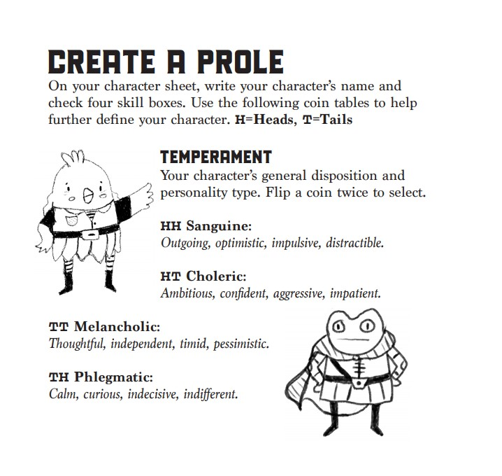
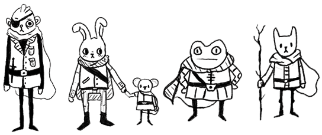

Welcome to PR1: Dogtooth Valley, the Highland Paranormal Society Pocket Realm series’ first module! It describes a small region that can be dropped into an ongoing campaign or used to launch a new one. This module assumes 1st-2nd level characters and is intended for use with your chosen analog adventure game.
This book contains 1 regional hex map with a random encounter table and 6 "dungeons" to explore, a town location with rumors and adventure hooks. There is also a bestiary and some random tables for treasure, weather, and more!
Kozmik is an illustrated collection of objects and entities found in deep space, intended for use in science fiction tabletop adventure games. Game masters can drop the 10 locations from this book into an ongoing campaign, use them to kick off a new campaign or visit them in a one-shot adventure.
This 24-page booklet contains 10 keyed maps of locations to explore and an adventure hook to send a group of space scoundrels to each one.
This is a system-agnostic book, meant to be used with the tabletop adventure game of your choice. It contains no game mechanics.
The downloads here on itch include two bonus documents: A New Sun Rises, which describes a solar system called the Fajro System. And a pdf with floor plans and brief descriptions of two spaceships La Piñata and The Pigeon Queen.!
PROLE is an analog adventure game that is played using pencils, paper and a coin. It's very simple to set up and play. Perfect for one shot sessions or short campaign arcs. It is a soft cover 8 page book and comes with a limited edition HPS coin.
The digital download includes Welcome To Loden. This one page adventure location describes the town of Loden. It is not a particularly dangerous town but strange things are most certainly afoot! Adventurers can take a break within the walls of Loden and hear the lovely Gear Organ grinding out its tooth-rattling hymn from the Church of Gears every hour! They can also try the local delicacies, like gorbleswurm butter or fresh yam cakes! Just try not to step on any salamanders. Play it with Prole or the tabletop RPG of your choice!